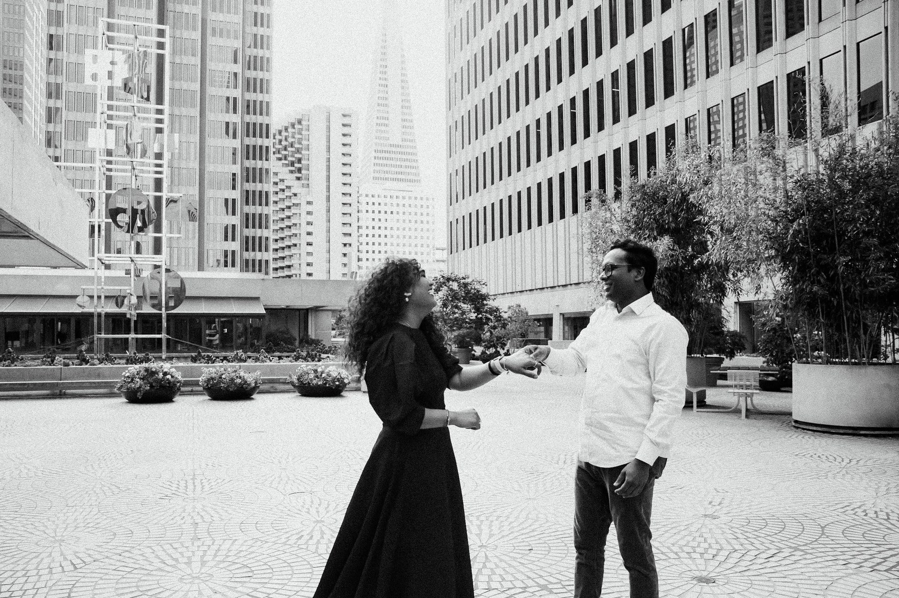

Our Story
Two worlds,
one beautifully
chaotic beginning

Every love story has a moment when the universe quietly smiles. Ours came wrapped in laughter, tiny coincidences, family blessings, and that one sweet realization: chaos and calm are not opposites, they are a love story waiting to happen.
This is the story of Lalana, with ocean wave energy, and Kartik, with calm water patience. One came with sparkle, drama, and spontaneous plans. The other came with quiet smiles, football updates, and a suspicious amount of patience.


Meet the Bride
Lalana
Born in Hyderabad, Lalana entered the world like a festival procession: bright, loud in the best way, full of color, and impossible to ignore.
Mischievous, naughty, and a certified troublemaker to her mom, she somehow also remains dad's forever princess. She is a globetrotter, a fun-loving storyteller, a camera-ready queen, and the kind of person who says, "just one picture" before creating a full photoshoot.
She brings laughter into rooms, energy into plans, and just enough drama to make every memory feel like a movie scene.

Meet the Groom
Kartik
Born in Nagpur, Kartik is the calm in the room, the quiet smile in the crowd, and the guy who makes peace look effortless.
Introverted, football-loving, thoughtful, and proudly a mamma's boii, he has the rare talent of staying composed while Lalana is already planning the next adventure, outfit, food stop, and backup food stop.
He may not say too much, but he shows love in the sweetest ways: by showing up, staying steady, and occasionally asking the most important question of all: "Did we check the time?"



And Then
The wave met the water
Lalana came in like a full ocean wave, bright, dramatic, spontaneous, and somehow already planning the next adventure before the current one had even started.
Kartik, calm water that he is, did not run away. He smiled, adjusted his glasses, checked the time, and quietly became her safest shore.
Somewhere between her "let's go now" and his "give me ten minutes," between her chaos and his calm, between her stories and his soft smiles, the wave met the water and both learned how beautifully they could move together.
And now, with all their beautiful madness,
they are ready for forever.